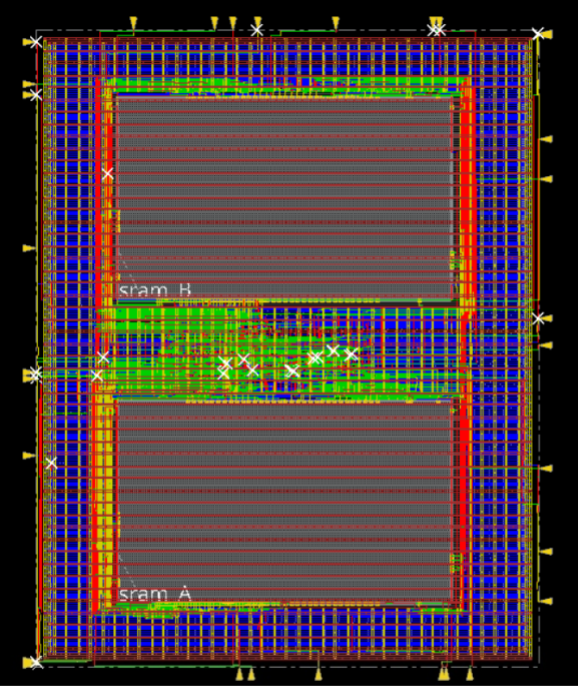
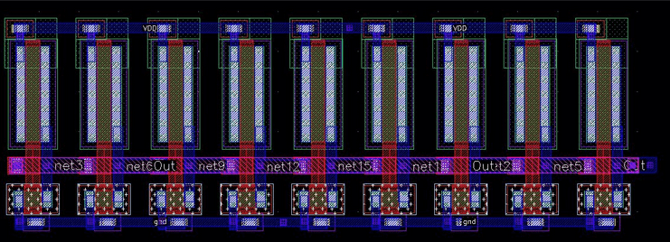
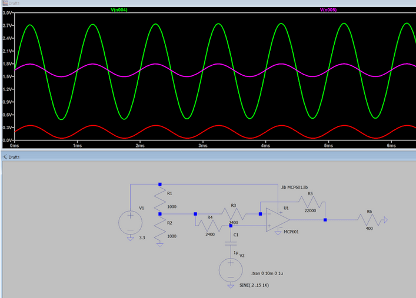

Doing the SJ Digital Onboarding, I learned digital design fundamentals, system verilog, waveform debugging, verification, and physical design basics. As a member of the digital design team, I am writing the RTL for the integer decode section of the club’s superscalar processor design.

Recently, I’ve also completed the analog onboarding and will be working on a level shifter for the next tapeout. Through this project, I gained experience in transistor level CMOS design, SPICE simulation, and component layout in Cadence Virtuoso.

This semester, I am leading the power management team. We’re focusing on increasing battery life while decreasing battery footprint, and implementing protection features to keep the user safe.
So far, we have designed a top level electrical system diagram, created a power budget encompassing every electrical component in the system, and are currently designing a battery protection PCB.
I've also helped out on the sensing team, helping design a microphone and op-amp circuit to pick up friction acoustics due to slipping.
